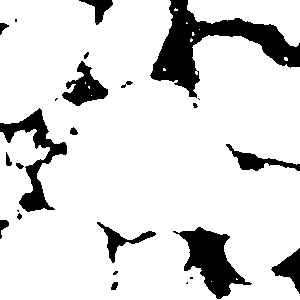

Start with a straight channel
Geometric tortuosity is τ = Lpath / Lstraight. A connected straight channel has τ = 1. Block it and no inlet-to-outlet path exists.
GEOMETRY INSIDE POROUS MEDIA
A straight line is the beginning. Follow the detours through a rock, change the geometry, and discover how tortuosity emerges.
MSc research playground · 1D, 2D and 3D · runs in your browser

TRY A PATH. CHANGE THE MEDIUM.
ACTIVE MEDIUM
Preparing a connected example…
Paint on a slice, then recalculate. Editing sets a binary mask with 1 = pore. Shape and segmentation changes clear the previous result.
FROM THE ORIGINAL DATASET
These are original cross-sections from the 300 × 300 × 300 binary stack used by the thesis notebook. Click a slice to study it as a 2D medium. A slice is not a substitute for the full 3D connectivity.
Source: the user-supplied Model300 archive referenced by the original notebook. Lithology, physical voxel size and external acquisition provenance have not been established. Black is selected as pore for gallery exploration; this remains an assumption you can change. Only these example slices and a small crop are published.
LEARN BY CHANGING ONE THING
Geometric tortuosity is τ = Lpath / Lstraight. A connected straight channel has τ = 1. Block it and no inlet-to-outlet path exists.
Offset the channel. The minimum describes the easiest outlet to reach; the outlet mean describes all reachable outlet pores. They need not be equal.
Face-connected graph paths travel along grid edges. Fast Marching approximates a continuum wavefront. Their values can differ because the metrics differ.
A pore disconnected in 2D may connect through neighboring slices. Explore the rock crop in 3D and switch the slice normal and propagation axis.
Start with arrays and segmentation, then shortest paths and the Eikonal equation. Use transport simulation and machine learning after the numerical definition is clear. Links lead to original documentation and educational material.
Arrays, indexing, masks and axis order. Try extracting a plane from a 3D array.
Thresholds, image regions and the consequences of choosing a pore phase.
Weighted graph distances and multi-source propagation. Compare isotropic and anisotropic spacing.
Intuition, mathematical background and applications from the method's research literature.
The Eikonal equation, front travel times, voxel spacing and masked obstacles.
Image-based measurements, synthetic media, pore-network extraction and simulations.
Study diffusive tortuosity and why it is distinct from a geometric path-length ratio.
Networks, conductance and boundary conditions for transport computations.
Datasets, networks, optimization and evaluation. Keep patches from the same rock in the same split.
Upload routes, validation, testing and cross-origin communication with a hosted interface.
Read the original workflow, then compare it with the modular numerical implementation.
Research linked from Sayyid's academic portfolio. Publisher access may be required.
The denominator is the distance between the inlet and outlet voxel centres: (N − 1) × spacing. Connectivity uses 2, 4 or 6 face neighbors in 1D, 2D or 3D; diagonal contact alone does not connect pores. A disconnected medium has no tortuosity estimate, shown as “Disconnected”.
The through-voxel map adds the shortest distances to the two boundary planes and normalizes their sum. It can include walks that retrace a dead-end branch. Preview sampling affects display only. An exterior rock photograph does not reconstruct internal 3D connectivity.
The browser runs reference CPU solvers in a Web Worker. It does not run the GPU backend or the experimental neural networks. A Python FastAPI service can be hosted separately and connected explicitly. GitHub Pages itself hosts static HTML, CSS and JavaScript.
About GitHub Pages · Hosting FastAPI on Vercel · Research source